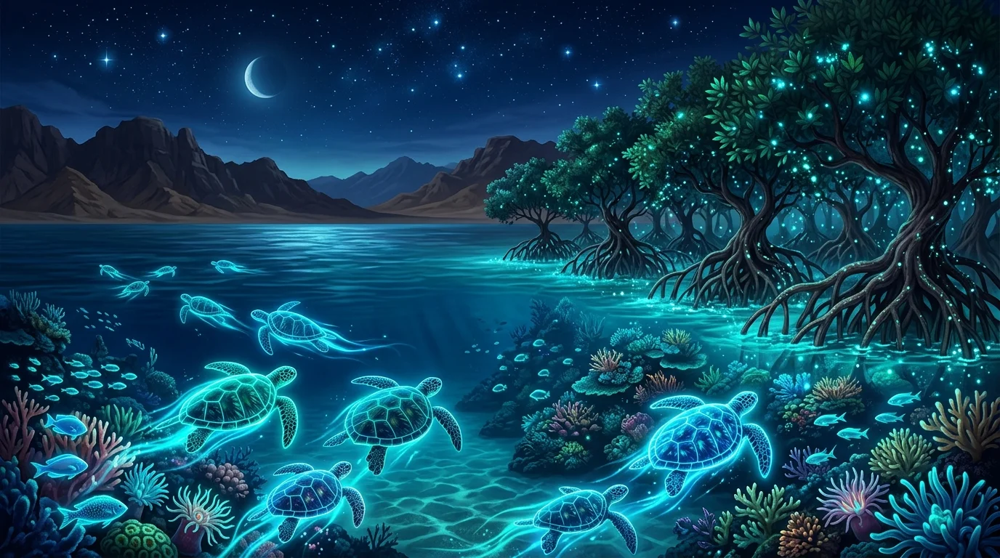

Lesson 2: The Beauty of Ras Mohamed & Language in Use
المفردات، الأفعال، شرائح المضارع البسيط وظروف التكرار
التفاعلية بالنمط المتوهج، القصة المصورة برأس محمد، واختبار شامل 🎯
⚡ شرح المضارع البسيط وظروف التكرار (Present Simple & Adverbs)
💡 شرائح مستر أحمد عاصم التفاعلية:، وتنقّل بسهولة بين القواعد والأمثلة مع التكبير
السلس.
شريحة 1 من 5
🧠 المفهوم الأساسي
1. The Present Simple: Facts & Daily
Habits
شريحة 1 من 5
متى نستخدم زمن المضارع البسيط (The Present
Simple Tense)؟
نستخدم زمن المضارع البسيط للتعبير عن أمرين
رئيسيين:
🌍 1. الحقائق العامة
والعلمية (Facts):
أشياء حقيقية دائماً وثابتة في
الكون والطبيعة:
• The sun rises in the east.
• Sea turtles live in warm seas.
• Mangroves grow in salty water.
⏰ 2. العادات
والروتين اليومي (Habits & Routines):
أفعال نكررها بانتظام كل يوم أو
أسبوع:
• I usually wake up at 7:00 AM.
• Tourists visit Sinai every year.
• Maged plays football on Fridays.
⚡ التكوين والإثبات
2. Affirmative Form: The Magic of -s
/ -es / -ies
شريحة 2 من 5
تكوين الجملة المثبتة في المضارع البسيط:
1. مع الجمع والضمير (I / We / You /
They):Subject + Verb
(Infinitive)
• We swim in the sea. | They protect the reefs. | I
live in Cairo.
2. مع المفرد الغائب (He / She /
It):Subject + Verb + (s / es /
ies)
• نضيف -es إذا انتهى الفعل بـ:
(ch, sh, ss, x, o, z) ➔ watches, washes, goes, passes
• إذا انتهى بـ consonant + y نحذف الـ y ونضيف -ies ➔ fly ➔ flies, study ➔ studies
• إذا انتهى بـ vowel + y نضيف -s فقط ➔ play ➔ plays, stay ➔ stays
🚫
النفي وتكوين السؤال
3. Negative & Question Rules: Don't /
Doesn't
شريحة 3 من 5
🚫 1. صيغة النفي
(Negative):
• I / We / You / They + don't + Inf They don't destroy the
environment.
• He / She / It + doesn't + Inf A turtle doesn't fly in the air.
⚠️ قاعدة مستر أحمد: بعد don't و doesn't يعود الفعل لأصله مجرداً من
أي إضافات!
❓ 2. صيغة السؤال
(Yes/No & Wh-):
• Do + (I/you/we/they) + Inf...? ➔ Do you like snorkeling? - Yes, I do.
• Does + (he/she/it) + Inf...? ➔ Does it live in saltwater? - Yes, it
does.
• Wh-word + do / does + Subj + Inf...? ➔ Where does the ranger work?
📊 ظروف التكرار
4. Adverbs of Frequency: The 0% to
100% Scale
شريحة 4 من 5
تبين عدد مرات تكرار الفعل وتجيب على سؤال
How often...?:
always
(دائماً)100%
usually
(عادةً)80%
often (غالباً) 💡
حرف t صامت!70%
sometimes
(أحياناً)50%
rarely / hardly ever
(نادراً)10%
never (أبداً /
إطلاقاً)0%
🎯 أين نضع ظرف التكرار؟
5. Position: Before Main Verbs vs
After 'Be'
شريحة 5 من 5
1.
قبل الفعل الأساسي (Before the Main Verb):
الفاعل ➔ ظرف التكرار ➔ الفعل
الأساسي •
We alwaysprotect our
nature. •
Mona usuallyhelps her
mother. •
He nevertells lies.
2.
بعد فعل يكون (After Verb to BE: am / is / are):
الفاعل ➔ فعل Be (am / is / are) ➔ ظرف
التكرار •
The sea water isalways warm in
Sharm. •
They areoften excited to
dive. •
Ahmed isnever late for
school.
🌊 جمال رأس محمد (The Beauty of Ras Mohamed)
استكشف المحمية الطبيعية والشعاب المرجانية والسلاحف البحرية وأشجار المانجروف
بالرسومات التفاعلية!
🖼️ Scene 1 of 3

Ras Mohamed National Park where Sinai desert
meets turquoise sea.
Connect 6 • Unit 1Page 1 / 3
Scene 1: Entering the Protected Sanctuary
After an unforgettable day in Cairo, Maged and
his family travel south...